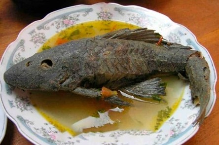

Caldo de Cuchas
Región Orinoquía · Afluentes del Orinoco
El caldo de cuchas es un plato típico de la Orinoquía preparado con "cuchas" — un pez de río muy común en la región — acompañado de plátano, yuca y hierbas aromáticas.
Los ríos de la Orinoquía han sido fuente de alimentación y vida para las comunidades de la región. Este caldo nació como una receta sencilla de los pescadores y las familias asentadas cerca de los afluentes del Orinoco, y con el tiempo se convirtió en un plato tradicional que muestra la estrecha relación entre el llanero y la naturaleza. (Ocampo López, J. 2006).
Ingredientes
- Cuchas frescas del río
- Plátano verde
- Yuca pelada
- Hierbas de la región
- Sal, ajo y cebolla larga
Las cuchas
La cucha es un pez de fondo, de cuerpo acorazado, abundante en los ríos de la Orinoquía. Aunque su apariencia puede parecer poco convencional, su carne es muy sabrosa y nutritiva, ideal para caldos de cocción lenta.
Significado
Este plato representa la conexión profunda entre el llanero y sus ríos. Prepararlo es un acto de identidad — una forma de honrar el ecosistema que ha sustentado a estas comunidades por siglos.